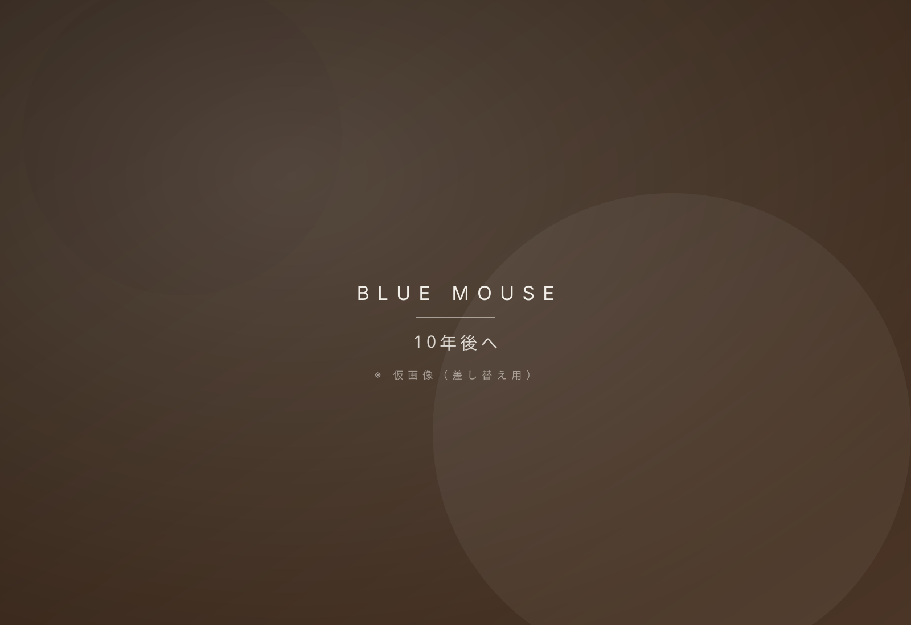
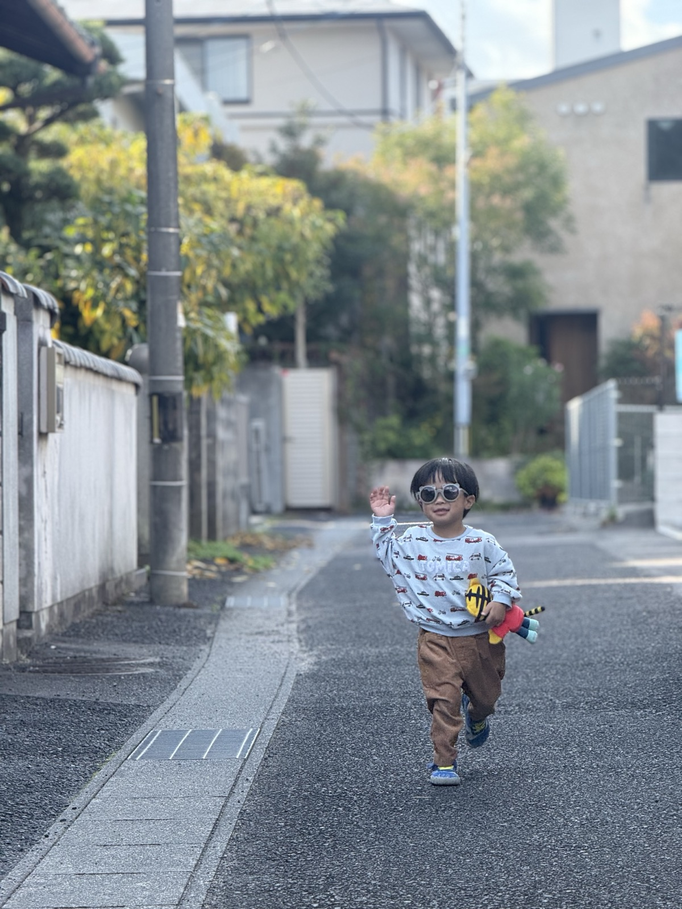

Philosophy
主体性療育から、
IT療育へ。
経済的自立から逆算した、10年後のロードマップ。

この子の10年後を、
本気で。

Reality
13万円
発達障害者の、
平均月収。
一般労働者の、約4割。
5年間
改善されていない。
2019年から変わらない、現実。
自分の力で、 生きていけるのか。
既存の療育に、
答えはなかった。
だから私たちは、
別の道を選んだ。
経済的自立から逆算した、10年のロードマップ。
Roadmap
まず土台を育て、
次に武器を手にする。
その実践が、二つの事業です。

Phase 01 — 児童発達支援
見えない力は、
こどもが自ら育む。
気持ちや意見を言語化する力が、10年後の経済的自立を支える根っこになります。


Phase 02 — 放課後等デイ
見える力は、
伴走者と共に。
IT学習で自分の凸凹と向き合い、社会で使える武器を手にします。
この想いを、
二つの現場で。
それぞれの事業が、ロードマップを形にします。